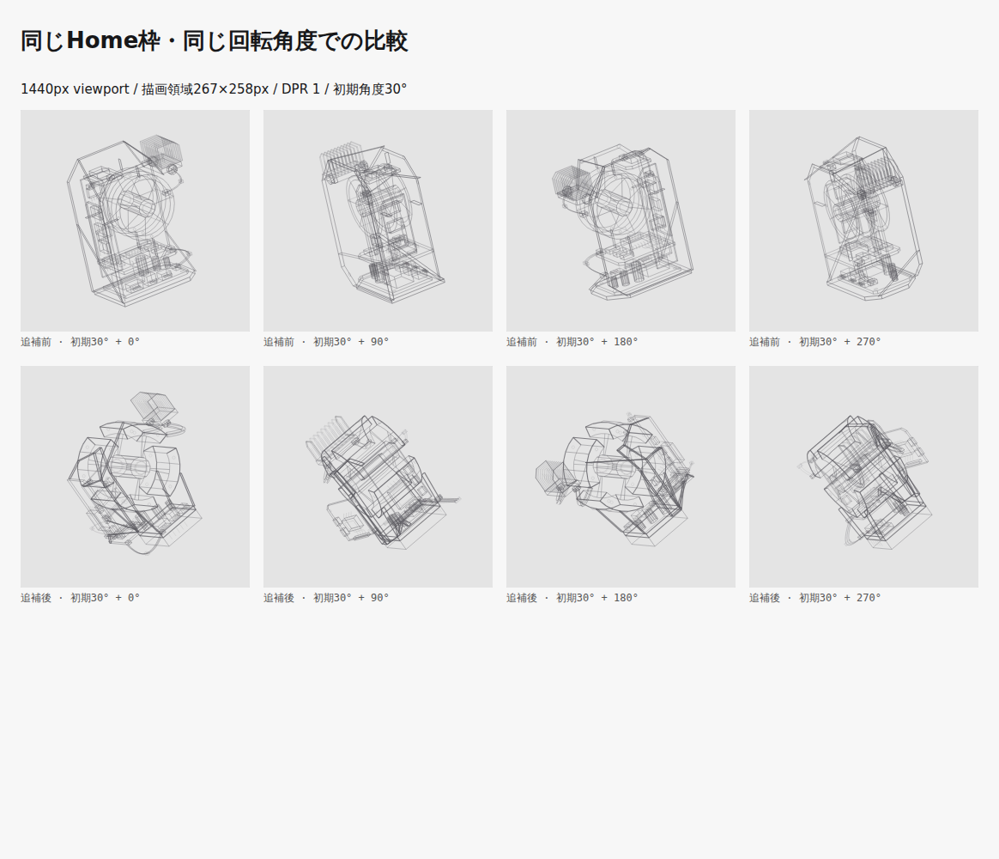
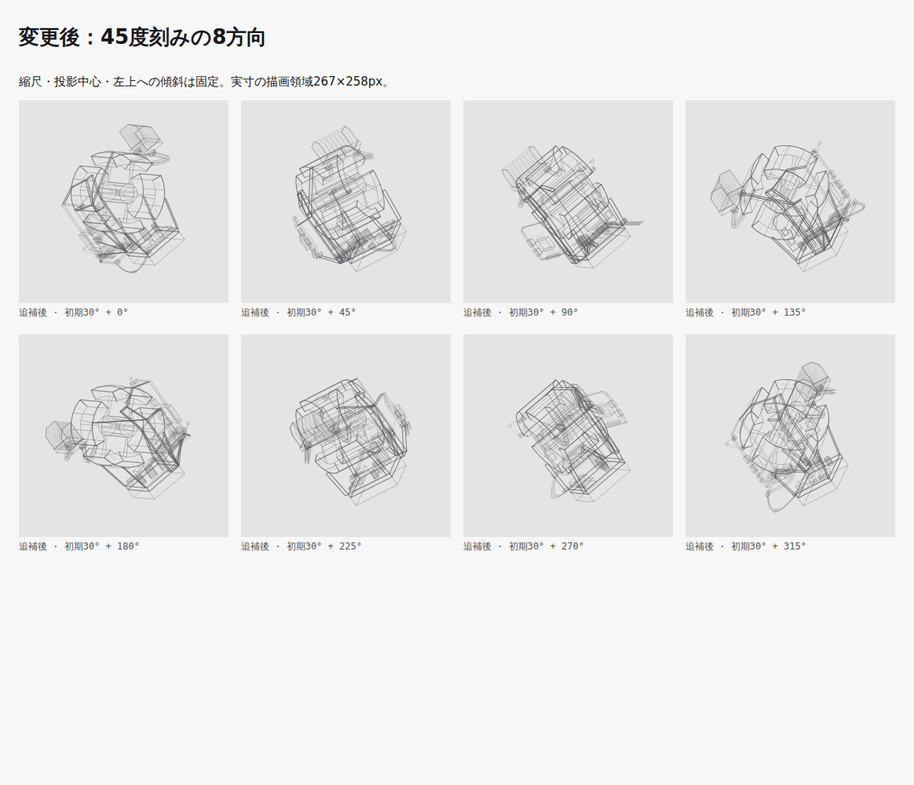
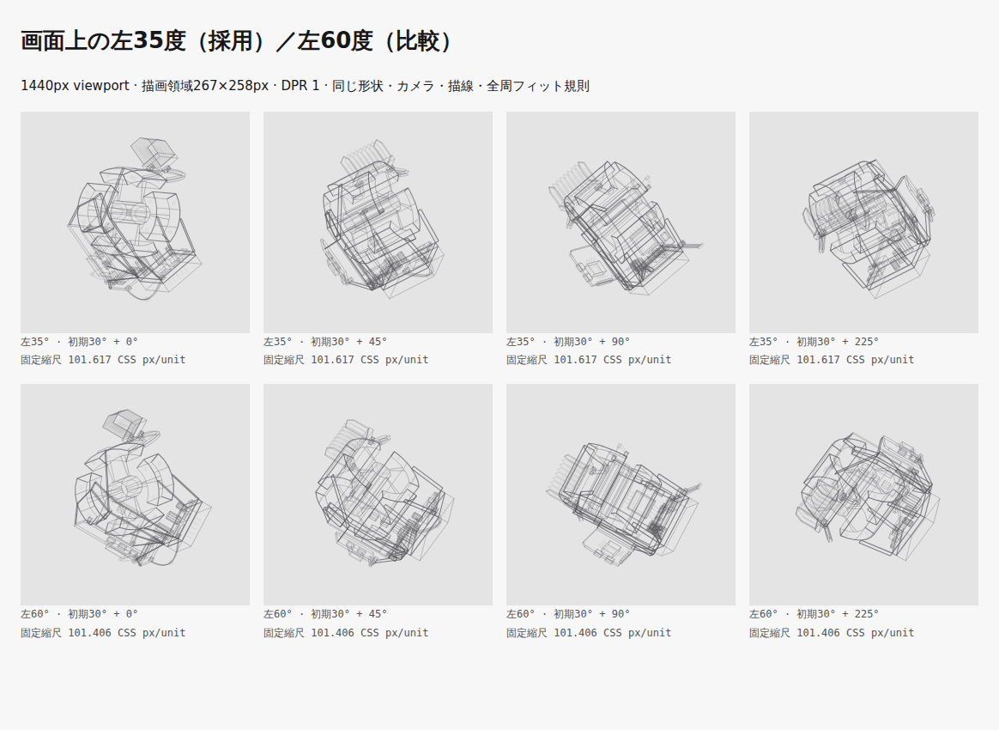
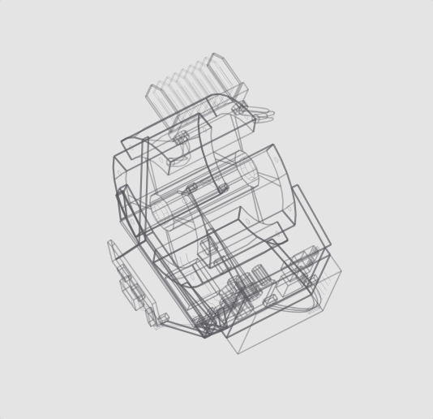

比較基準：2fd459edf548a08cd0bcc2b88f356242a58d00d2（PR
#170の現行案）。実装：14837f875bcfb63c2c2cd9de43da3fed30e059b3。後続コミットはこの検証資料のみ。
大きな囲いと棚板を、背面の短い支持梁と下部からのアームへ再構成しました。中央は4分割の円筒外殻・前後をつなぐリブ・開いた内部・ハブで構成し、スポークを外殻とハブの実際の辺へ接続しています。側面に放熱部と2本の配管、反対側と背面に3枚の制御基板、下部に電源・端子群をまとめました。
線幅は主要輪郭／部品／細部が1.1／0.8／0.5 CSS px、奥→手前のalphaは0.58–0.88／0.30–0.56／0.14–0.28です。全周で固定した奥行き範囲を使います。取付点で線を分割し、部分的な重複描画も除去しました。線分 1733→1883、共有頂点 1404→1466。線分数を完成条件にはしていません。
上段は追補前のPR案、下段は追補後です。1440px viewport、描画領域267×258px、DPR 1。初期30度からの相対角度を表示しています。


狭いPC枠223×258pxの8方向。+45／+90／+225度を含め、側面の厚みと部位間の空間を確認しました。
角度は画面の垂直上方向から左へ測ります。今回の採用は確認いただいた35度です。コアと下部電源の上下関係を追いやすい向きを残し、時計の10時方向に当たる60度も同条件で比較しました。カメラ俯角20度に対してZ傾斜を逆算し、投影した軸で検証しています。

固定縮尺はPC枠で35度=101.617、60度=101.406 CSS px/unit。双方とも同じ78%の全周フィット規則です。比較用Canvasは共通の投影関数から描き、35度の初期画像が本番描画とピクセル単位で一致することを確認しました。本番に切替UIはありません。各枠・DPRでの角度と縮尺
1024px / 980px / 768px。ページ配置と共通CSSは変更していません。描画制御とSVGコンポーネントも今回の追補では変更せず、共有データ経路を維持しています。

linux 6.18.54.1-microsoft-standard-WSL2 / AMD Ryzen 5 3600 6-Core Processor / Chromium 156.0.8078.4 / Node v26.12.1。各条件で60描画をウォームアップ後、実描画480回を採取。clearRect直前から最後のstroke直後までの投影＋Canvas線描画の時間で、計測処理を含みます。描画を省略したrAFとGPU合成は含めません。
| 条件 | 追補前 中央値 / p95 (ms) | 追補後 中央値 / p95 (ms) |
|---|---|---|
| 267×258px / DPR 1 | 0.50 / 0.80 | 0.50 / 0.80 |
| 348×238px / DPR 2 | 0.50 / 0.80 | 0.50 / 0.90 |
この環境ではp95 8ms以内の目安を満たしました。全端末の性能保証ではありません。
| 項目 | 追補前 (B) | 追補後 (B) |
|---|---|---|
| Home HTML | 324,460 | 351,794 |
| Home HTML gzip | 31,405 | 33,197 |
| 静止SVG | 314,216 | 341,550 |
| 静止SVG gzip | 27,249 | 28,961 |
追補前の測定値・480サンプル / 追補後の測定値・480サンプル
全周検証の数値 / 実行コマンド・対象コミット・ソースSHA256
DESIGN.mdsrc/utils/wireframeDevice.tssrc/utils/wireframeGeometry.tstests/unit/docs/design-guidelines.test.tstests/unit/utils/wireframeDevice.test.tstests/unit/utils/wireframeGeometry.test.tstests/visual/wireframe-device.spec.tsFirefox／Safari、実機タッチ、実タブからの非表示通知は今回未検証です。タッチはChromiumエミュレーション、visibilitychange通知への停止・復帰は単体・ブラウザーテストで確認しています。既存PRへの追補であり、マージ・サイト公開は行いません。